Plain <img> tags, no CSS overlays, no lazy loading. Every tile below should show a photograph. A grey/broken tile means that exact file is not being served. Uses relative paths, so it works regardless of how the site is hosted.
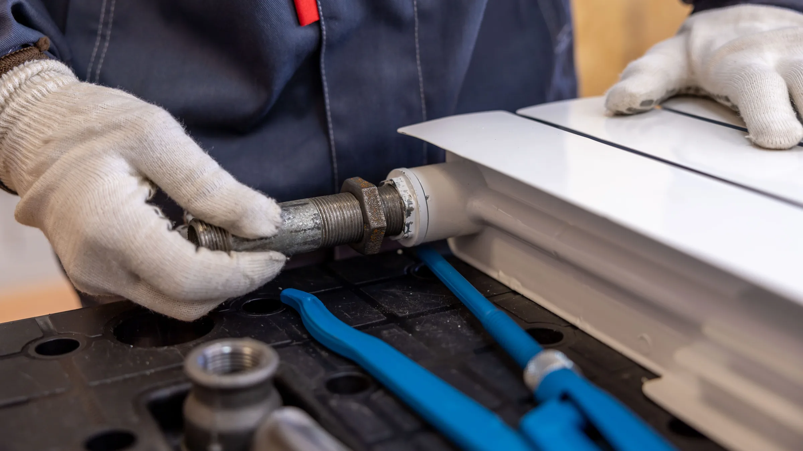
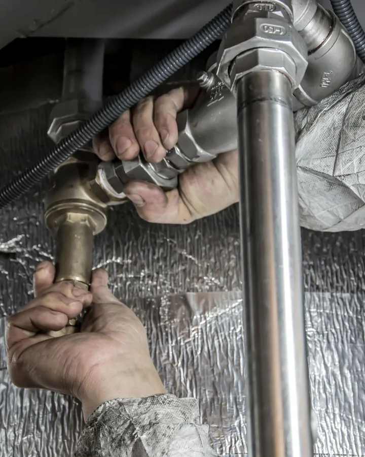
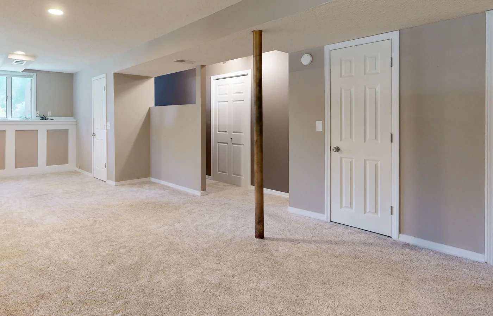
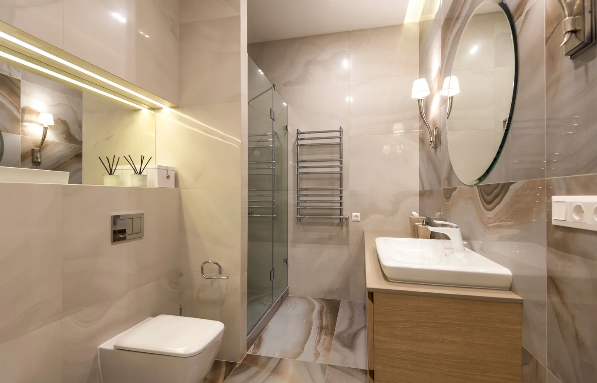
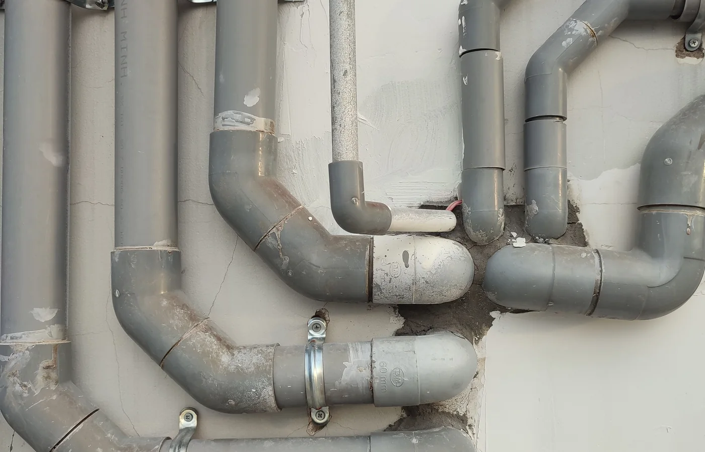
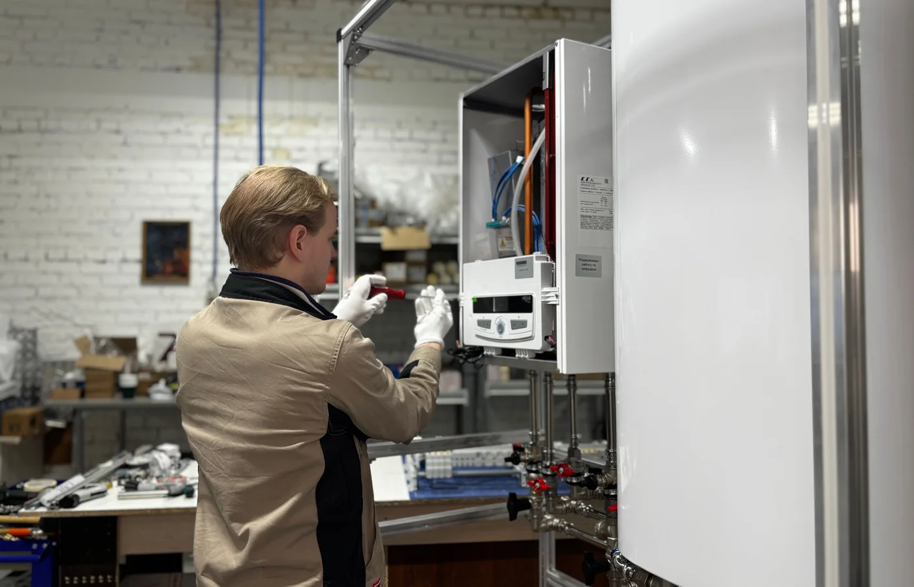
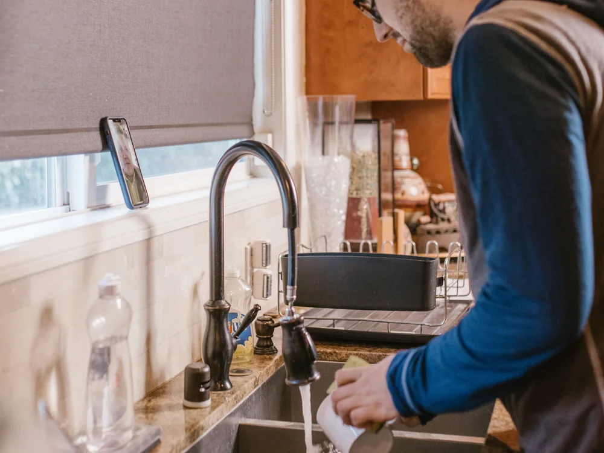
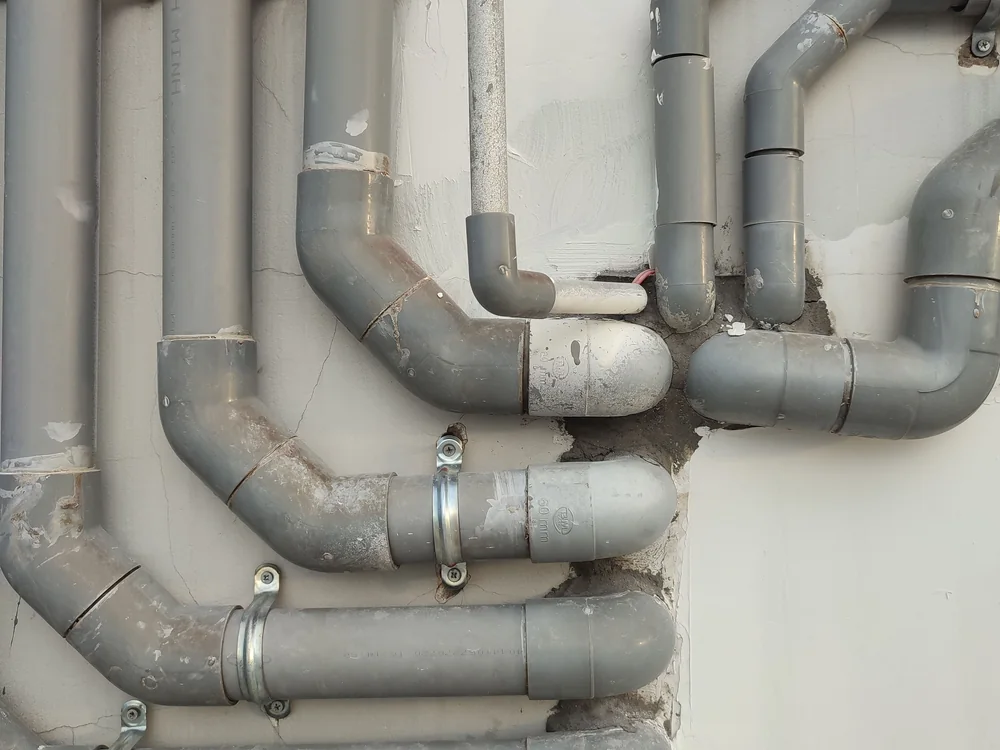
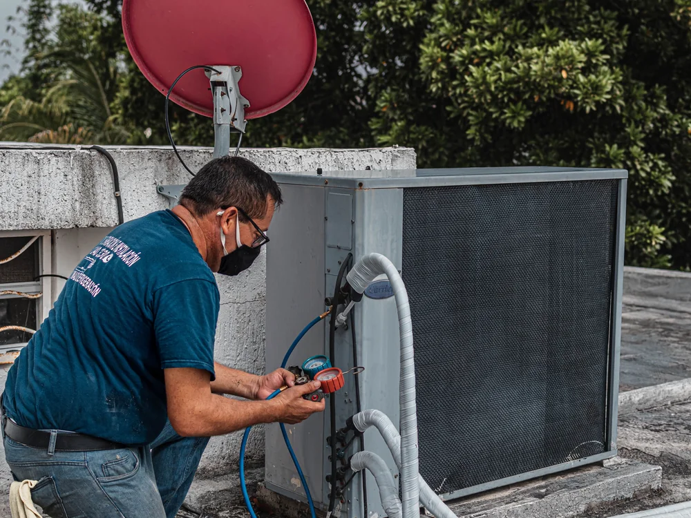
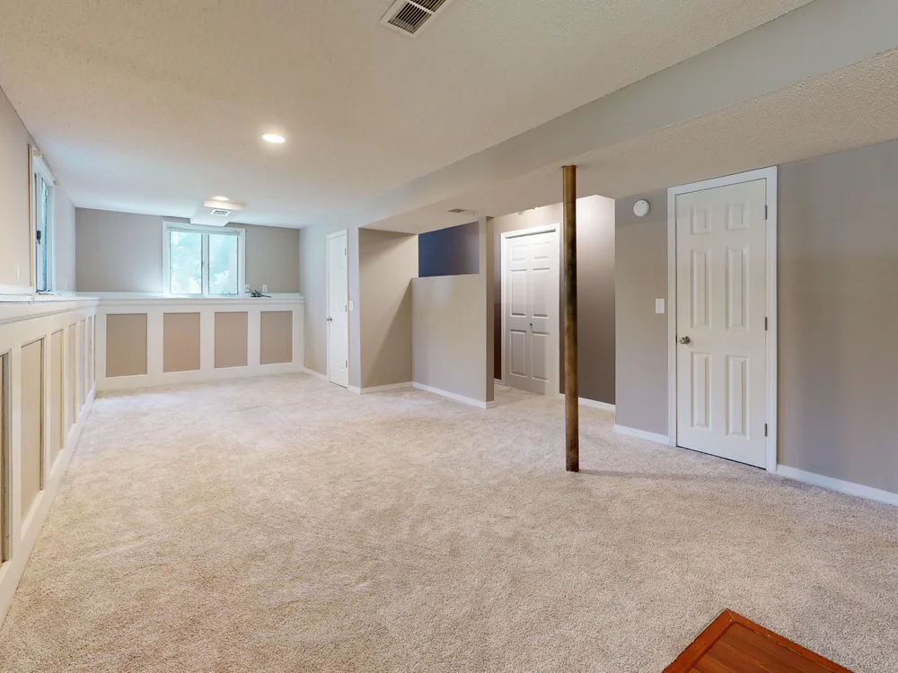
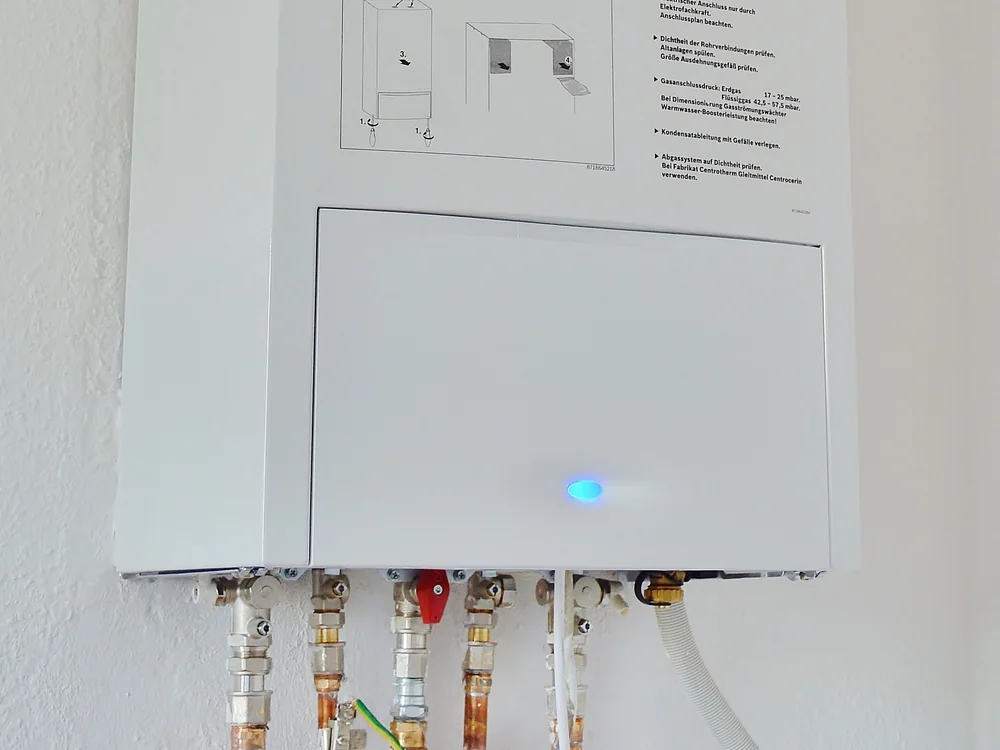